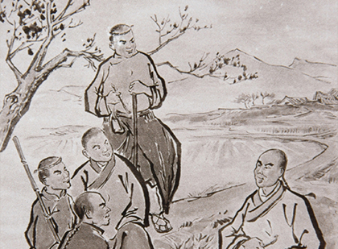
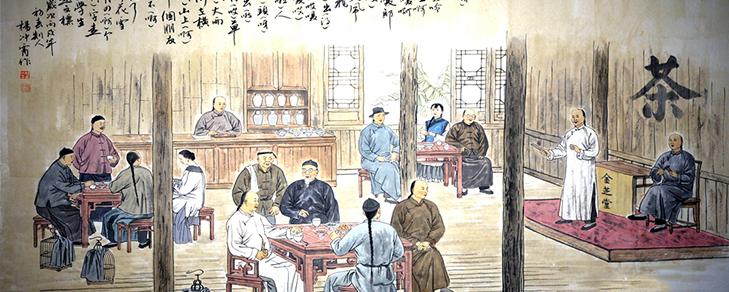

越剧唱腔
2019-05-16 19:55:45
腔，歌唱的音调、旋律，也称腔调、唱腔有时候，也指字后的拖腔。越剧唱腔永不枯竭的源泉来自于丰富多彩的民间音乐和民歌资源。民间音乐和民歌资源是越剧唱腔发展的夯实根基。越剧唱腔的多次变革是在艺术实践过程中创造形成的，在每个时代，都有其独特的唱腔特点。常用的主要腔调是【四工调】，【尺调】，【弦下调】。

唱腔种类
四工合调
清咸丰元年(1851)前后，嵊州市甘霖镇马塘村农民金其炳创立。它是在当地道士宣卷调、忏经佛曲的基础上，吸收牧牛山歌和外地同类唱调而形成的。
哀哀调
1863年嵊州市甘霖镇中高村南派艺人张国森创立。
呤嗄调
1889年，嵊州市甘霖镇马塘村北派艺人金芝堂创立。开拓了平叙性腔句，“起、平、转、落”的结构也较严密，便于说唱长本书目。
四工调
1925年，施银花在琴师王春荣的帮助下创立。
尺调
1943年11月由袁雪芬主演的《香妃》，是开始形成〔尺调〕特征音调（包括调腔、伴奏、托腔）比较明显的第一个剧目。
弦下调
[弦下腔]是在[尺调腔]的基础上，借鉴京剧[反二黄]手法，吸收越剧早期[六字调]的因素发展而来。
